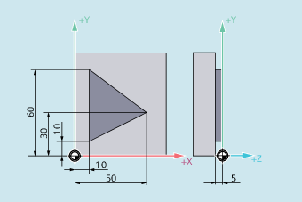

Mit den Befehlen der G-Gruppe 18 (G450/G451) kann bei eingeschalteter Werkzeugradiuskorrektur (G41/G42) der Verlauf der korrigierten Werkzeugbahn beim Umfahren von Werkstück-Außenecken festgelegt werden.
| Hinweis |
|
Mit G450/G451 wird auch der Anfahrweg bei aktivem KONT und Anfahrpunkt hinter der Kontur festgelegt (siehe ""). |
G450 [DISC=<Wert>]
G451
| Umfahren mit Übergangskreis einschalten Mit G450 umfährt der Werkzeugmittelpunkt die Werkstück-Außenecke auf einem Kreisbogen mit Werkzeugradius. | ||||
| Flexible Programmierung der Kreisbahn bei G450 (optional) Mit G450 können keine scharfen Außenkonturecken entstehen, weil durch den Übergangskreis die Werkzeugmittelpunktsbahn so geführt wird, dass die Werkzeugschneide auf der Außenecke (programmierte Position) stillsteht. Sollen mit G450 trotzdem scharfe Außenecken bearbeitet werden, kann mit der Adresse DISC eine Überhöhung programmiert werden. Dadurch wird aus dem Übergangskreis ein Kegelschnitt und die Werkzeugschneide hebt von der Außenecke ab. | ||||
| Typ: | INT | |||
Wertebereich: | 0, 1, 2, ... 100 | ||||
Bedeutung: | 0 | Übergangskreis | |||
100 | Schnittpunkt der Äquidistanten (theoretischer Wert) | ||||
| Umfahren mit Schnittpunkt der Äquidistanten einschalten Mit G451 fährt der Werkzeugmittelpunkt den Schnittpunkt der beiden Äquidistanten an, die im Abstand Werkzeugradius zur programmierten Kontur liegen. Das Werkzeug schneidet in der Werkstückecke frei. G451 gilt nur für Geraden und Kreise. | ||||
| Hinweis |
DISC wirkt nur mit Aufruf von G450, kann allerdings in einem vorherigen Satz ohne G450 programmiert werden. Beide Befehle sind modal wirksam. |
Im folgenden Beispiel wird bei allen Außenecken ein Übergangsradius eingefügt (entsprechend der Programmierung des Eckenverhaltens in Satz N30). Hierdurch vermeidet man, dass das Werkzeug zum Richtungswechsel stehen bleiben muss und freischneidet.
| Programmcode | Kommentar |
|---|---|
| N10 G17 T1 G0 X35 Y0 Z0 F500 | ; Startbedingungen |
| N20 G1 Z-5 | ; Werkzeug zustellen. |
| N30 G41 KONT G450 X10 Y10 | ; WRK mit An-/Abfahrmodus KONT und Eckenverhalten G450 einschalten. |
| N40 Y60 | ; Fräsen der Kontur. |
| N50 X50 Y30 | |
| N60 X10 Y10 | |
| N80 G40 X-20 Y50 | ; Korrekturbetrieb ausschalten, Wegfahren auf Übergangskreis. |
| N90 G0 Y100 | |
| N100 X200 M30 |
Siehe auch:
Verhalten beim Umfahren von Außenecken festlegen (G450, G451, DISC): Weitere Informationen
Werkzeugradiuskorrektur ein-/ausschalten (G40, G41, G42, OFFN)